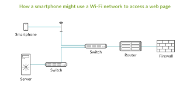

Switch
é um equipamento que permite a comunicação entre dispositivos de uma rede, como computadores, impressoras, servidores e roteadores
Funcionamento do Switch
O switch recebe pacotes de dados enviados por um dispositivo, Ele verifica se o endereço MAC de destino é válido, Ele verifica se a informação pode ser transmitida e Ele encaminha os dados pelas portas apropriadas ao destino correto
Tipos de Switch
Switches simples conectam dispositivos em uma única rede local (LAN)
Switches mais avançados podem conectar dispositivos de várias LANs
Switches gerenciáveis permitem o monitoramento de tráfego, definição de prioridades e criação de VLANs
Switches não gerenciáveis são mais simples de instalar e sem configurações avançadas
Fotos do Switch e Esquematicos
